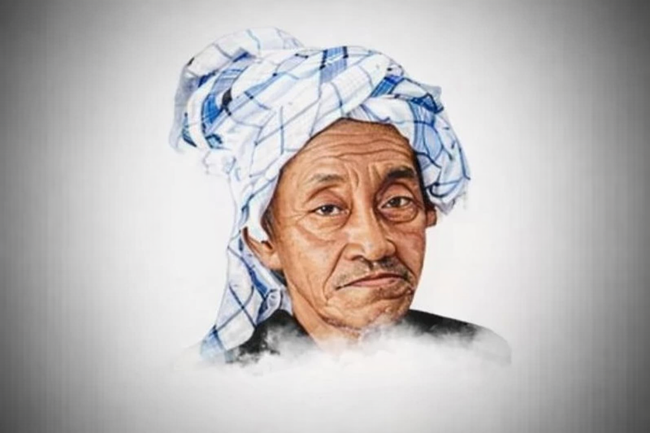

Ruhul Jihad & 5 Wasiat K.H.R. As’ad Syamsul Arifin
Ruhul Jihad
- Pertama: Mencerdaskan kehidupan masyarakat dengan cara ikut berpartisipasi dalam bidang pendidikan, baik penguasaan ilmu pengetahuan maupun aspek menejerial.
- Kedua: Ikut serta dalam mengembangkan organisasi yang beliau turut andil untuk mendirikannya, yaitu Nahdlatul Ulama’ sebagai organisasi keagamaan - sosial kemasyarakatan.
- Ketiga: Melakukan perwakilan dan pemberdayaan masyarakat pada sektor ekonomi umat, guna terciptanya tatanan makmur dan sejahtera.
5 Wasiat
- Santri Sukorejo yang keluar dari NU, jangan berharap berkumpul dengan saya di akhirat.
- Santri saya yang pendiriannya tidak sama dengan saya, saya tidak bertanggung jawab di hadirat Allah SWT.
-
Santri saya yang pulang atau berhenti harus ikut mengurusi dan memikirkan paling tidak salah satu dari tiga hal dibawah ini:
- Pendidikan Islam
- Dakwah melalui NU
- Ekonomi Masyarakat
“Biar alim, biar kaya tapi tidak ikut salah satu tersebut, saya ingin tahu kesempurnaan hidupnya, sebaliknya biar bodoh, biar miskin, tapi ikut mengurusi atau cawe-cawe paling tidak salah satunya dengan ikhlas, rasakan sendiri kesempurnaan hidupnya”.
- Istiqomah baca Rotibul Haddad (PDF).
- Santri saya sebenarnya umum, anak siapa saja, dalam keadaan bagaimana saja, pasti selamat dan jaya asal jujur, giat dan ikhlas.